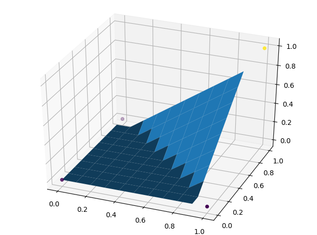
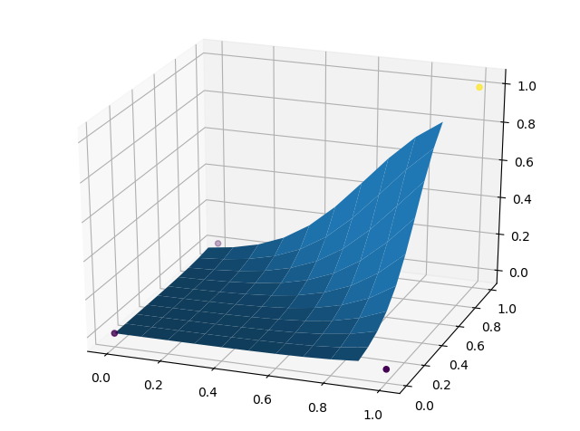

直接使用底层 API
首先还是一样，导入需要的库。因为要画 3D 的图，需要额外导入 Axes3D。
import numpy as np
import tensorflow as tf
import matplotlib.pyplot as plt
from mpl_toolkits.mplot3d import Axes3D
设置超参数及训练所需数据
LEARNING_RATE = 0.08
EPOCHES = 500
X_input = np.array([[0., 0.], [0., 1.], [1., 0.], [1., 1.]])
Y_input = np.array([[0.], [0.], [0.], [1.]])
如果不带激活函数的话，训练结果会收敛于 [-0.25, 0.25, 0.25, 0.75]，虽然可以算是训练成功了，不过我不满意。将激活函数函数设为 tf.nn.relu 之后，训练结果就很不错了，很快就收敛到 [0, 0, 0, 1]。
X = tf.placeholder(tf.float32, (None, 2))
Y = tf.placeholder(tf.float32, (None, 1))
W = tf.Variable(tf.random_uniform((2, 1)))
b = tf.Variable(tf.random_uniform(()))
pred = tf.nn.relu(tf.matmul(X, W) + b)
loss = tf.reduce_sum((Y - pred) ** 2)
optimizer = tf.train.GradientDescentOptimizer(LEARNING_RATE).minimize(loss)
feed_dict = {X: X_input, Y: Y_input}
开始训练：
with tf.Session() as sess:
sess.run(tf.global_variables_initializer())
for epoch in range(1, EPOCHES+1):
sess.run(optimizer, feed_dict=feed_dict)
if epoch % 500 == 0:
print('Epoch #{}, loss = {}'.format(
epoch, sess.run(loss, feed_dict=feed_dict)))
善后，画画图
# 仍在 with 里边
_w = W.eval()
_b = b.eval()
print('trained successfully')
print('real:\n{}'.format(Y_input))
print('pred:\n{}'.format(sess.run(pred, feed_dict=feed_dict)))
fig = plt.figure()
ax = Axes3D(fig)
ax.scatter(X_input[:, 0], X_input[:, 1], Y_input[:, 0], c=Y_input[:, 0])
_x, _y = np.meshgrid(np.arange(0, 1, 0.1), np.arange(0, 1, 0.1))
_z = tf.nn.relu(_w[0] * _x + _w[1] * _y + _b).eval(session=tf.Session())
ax.plot_surface(_x, _y, _z)
plt.show()
最后可以发现，这个平面已经拟合得很好了：

有趣的是，如果激活函数选用 tf.nn.sigmoid，这个平面将会是这样的：

Keras 版
Keras 封装了很多方便的模块，而且 tf.keras.layers.Dense 直接对应了 activation(WX + b)。可以不用自己去维护那些权重和偏置值，很方便。
import numpy as np
import tensorflow as tf
import matplotlib.pyplot as plt
LEARNING_RATE = 0.08
EPOCHES = 10000
X_input = np.array([[0., 0.], [0., 1.], [1., 0.], [1., 1.]])
Y_input = np.array([[0.], [0.], [0.], [1.]])
def loss(true, pred):
return tf.reduce_sum((true - pred) ** 2)
model = tf.keras.models.Sequential([
tf.keras.layers.Dense(1, activation=tf.nn.sigmoid)
])
model.compile(optimizer=tf.train.GradientDescentOptimizer(LEARNING_RATE),
loss=lambda a, b:tf.reduce_sum((a-b)**2))
model.fit(X_input, Y_input, epochs=EPOCHES)
print('true: ', Y_input[:, 0])
print('pred: ', model.predict(X_input)[:, 0])